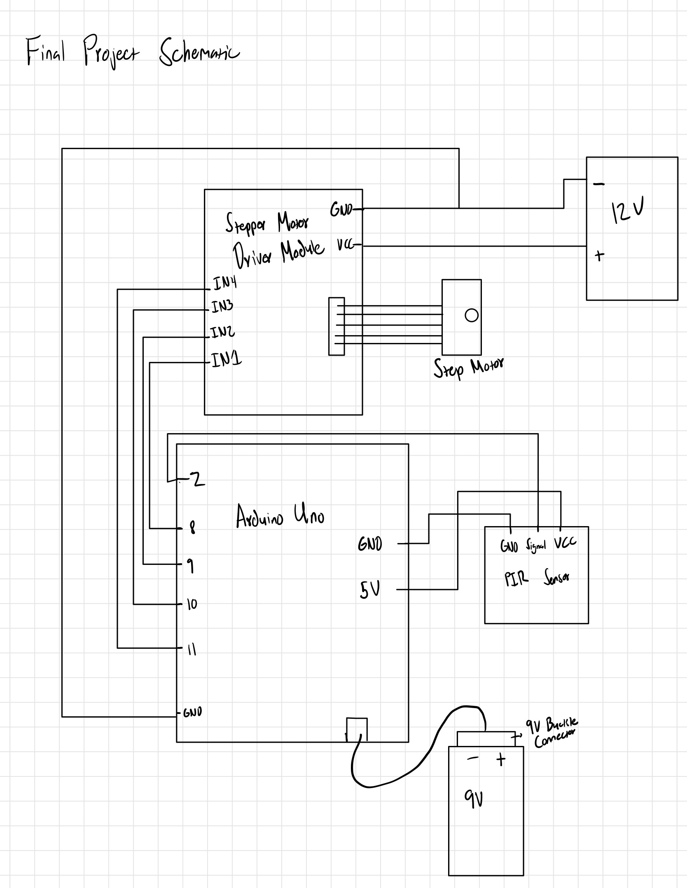
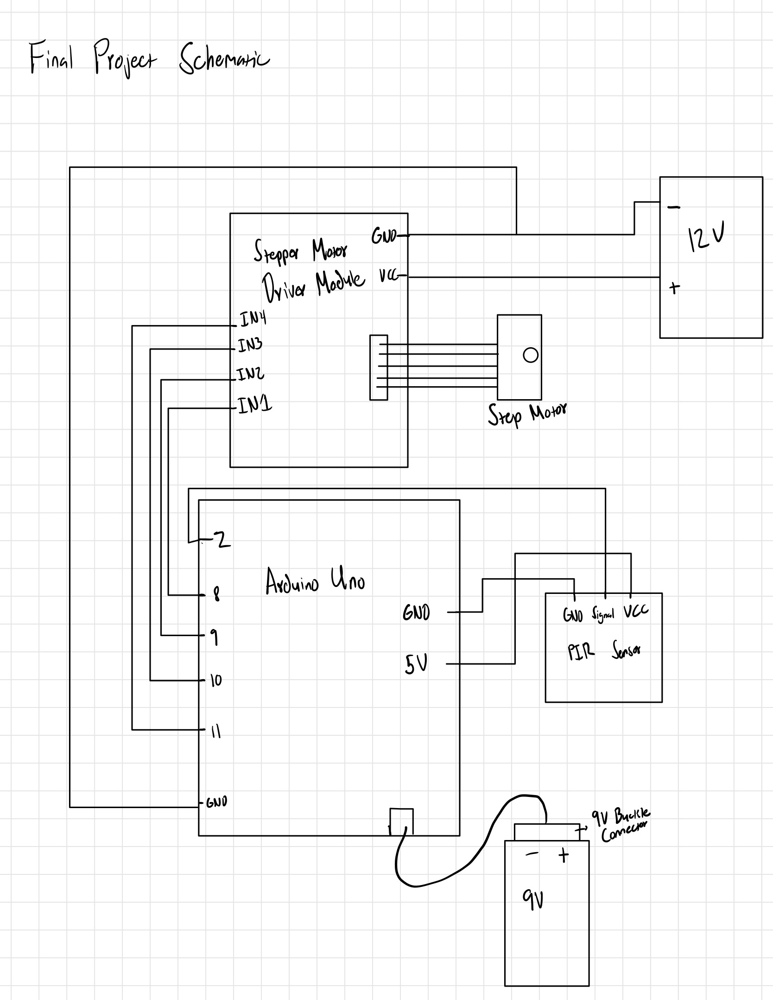
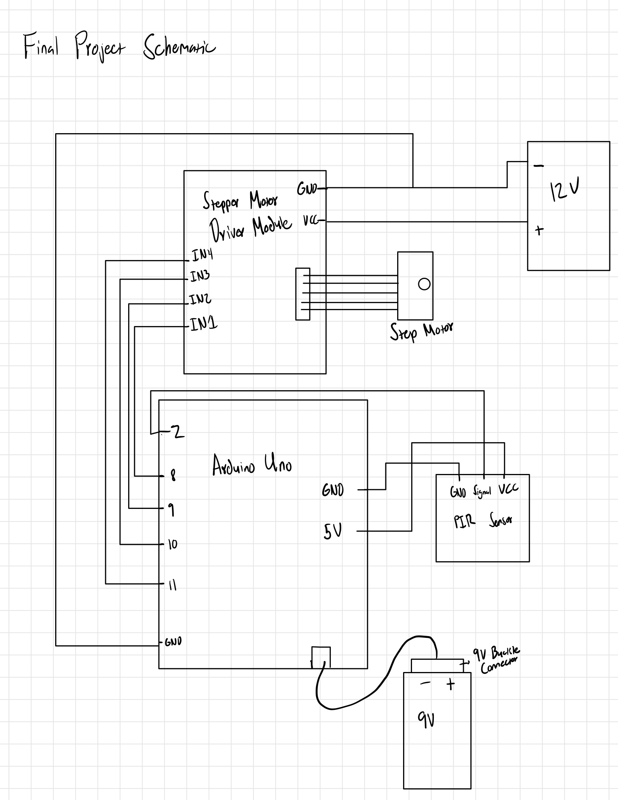
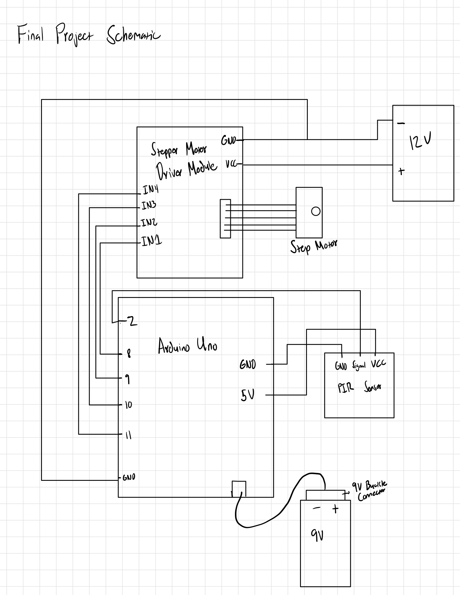

This product requires the following items:
Once I gathered the items, I built the circuit according to the schematic and the photo. It’s important to note that the stepper motor draws around 250mA of current, which would drain the 9V battery quickly. This means the stepper motor will require an external power source outside of the Arduino. In this case, I used the 12V DC adapter, though anyone may use the 9V adapter that comes with the Arduino kit as well. For the PIR motion sensor, make sure the time delay is set to the lowest setting (the potentiometer on the left). Adjust the sensitivity of the motion sensor by turning the potentiometer on the right. Turning it clockwise will decrease the range and vice versa.
After I completed the circuit, I began product assembly as shown in the circuit photo. I cut a small hole in the bottom of the box to fit the shaft of the stepper motor, but nothing more. To attach the disco ball to the stepper motor, I superglued the end of an already zipped zip tie to the shaft and wrapped it in electrical tape. It’s incredibly important to apply the electrical tape afterward, as the stepper motor will melt the super glue. I discovered this in an unfortunate manner.
Next, I placed the components into the box except for the motion sensor, which I taped to a different part of my ceiling. Then, I connected the motion sensor and 12V power to the circuit and proceeded to duct tape the box to the ceiling. This resulted in a contraption seen in the video, which successfully spins a disco ball when a user activates the motion sensor:
Below is the code that makes this work:
// Code referenced for stepper motor:
// https://docs.arduino.cc/learn/electronics/stepper-motors/
// Code referenced for PIR motion sensor:
// https://randomnerdtutorials.com/arduino-with-pir-motion-sensor/
#include
int stepsPerRevolution = 2048; // Steps per revolution for your step motor
int rpm = 10; // RPM setting for step motor
Stepper myStepper(stepsPerRevolution, 8, 10, 9, 11);
int sensor = 2; // PIR motion sensor pin
bool motion = false; // Tracks if motion is detected
long timer = 0; // Stores start time when motion detected
void setup() {
myStepper.setSpeed(rpm);
pinMode(sensor, INPUT);
Serial.begin(9600);
}
void loop() {
int val = digitalRead(sensor);
if (val == HIGH && !motion) { // Motion detected and motor not already spinning
motion = true;
timer = millis(); // Record start time
Serial.println("Motion detected, disco time");
}
if (motion) {
long spin_time = millis() - timer;
if (spin_time <= 15000) { // Spin for 15 seconds (optimal disco ball spin time)
myStepper.step(10); // Start moving
} else {
motion = false; // After 15 seconds, stop spinning
Serial.println("Stopping disco time");
}
}
}